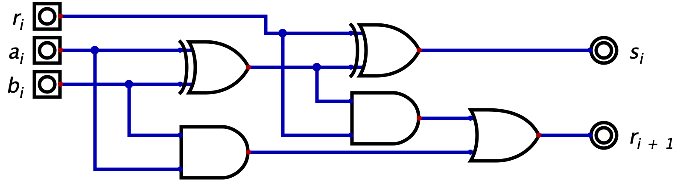
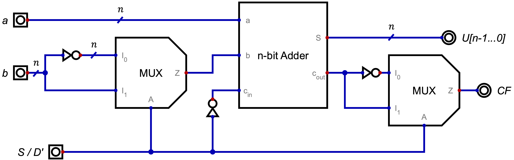

Definizione - Aritmetica binaria tra numeri unsigned
Il procedimento per effettuare operazioni di somma e differenza tra numeri binari non è differente dalle operazioni in colonna con i numeri decimali.
Si aggiunge tuttavia il concetto di overflow, dovuto al fatto che nei sistemi digitali si ha un numero fisso e finito di cifre disponibili (e quindi un numero massimo rappresentabile): ipotizzando infatti di dedicare \( 4\) bit per la rappresentazione di un numero, si ha che il massimo numero rappresentabile è \( 15\) ( \( 2^{n} - 1\) ). Sommando quindi (ad esempio) i numeri \( 11\) e \( 10\) (entrambi rappresentabili con \( 4\) bit), si otterrebbe il valore \( 21\) (che necessiterebbe di almeno \( 5\) bit).
 Tale concetto è facilmente osservabile dalla presenza dell'ultimo bit di riporto (il "carry out") a
\( 1\)
.
Tale concetto è facilmente osservabile dalla presenza dell'ultimo bit di riporto (il "carry out") a
\( 1\)
.
Si aggiunge tuttavia il concetto di overflow, dovuto al fatto che nei sistemi digitali si ha un numero fisso e finito di cifre disponibili (e quindi un numero massimo rappresentabile): ipotizzando infatti di dedicare \( 4\) bit per la rappresentazione di un numero, si ha che il massimo numero rappresentabile è \( 15\) ( \( 2^{n} - 1\) ). Sommando quindi (ad esempio) i numeri \( 11\) e \( 10\) (entrambi rappresentabili con \( 4\) bit), si otterrebbe il valore \( 21\) (che necessiterebbe di almeno \( 5\) bit).
Definizione - Adder
L'adder è il circuito combinatorio che realizza la somma.
Invece di progettare una rete con \( 2 \cdot n\) ingressi ( \( n\) per ogni numero), si può notare la possibilità di adottare un approccio modulare: ciò che è vero per due numeri fatti di un singolo bit, può essere ripetuto per \( n\) volte (aggiungendo il riporto). Sarà quindi sufficiente creare una rete che somma tre bit (i due bit in ingresso \( a_{i}\) e \( b_{i}\) aggiunti del bit di riporto precedenti \( r_{i}\) ) e che restituisce il bit somma \( s_{i}\) e il bit di riporto successivo \( r_{i + 1}\) .
Invece di progettare una rete con \( 2 \cdot n\) ingressi ( \( n\) per ogni numero), si può notare la possibilità di adottare un approccio modulare: ciò che è vero per due numeri fatti di un singolo bit, può essere ripetuto per \( n\) volte (aggiungendo il riporto). Sarà quindi sufficiente creare una rete che somma tre bit (i due bit in ingresso \( a_{i}\) e \( b_{i}\) aggiunti del bit di riporto precedenti \( r_{i}\) ) e che restituisce il bit somma \( s_{i}\) e il bit di riporto successivo \( r_{i + 1}\) .
Definizione - Half Adder
L'Half Adder prevede la presenza di due soli bit di ingresso (
\( a_{i}\)
e
\( b_{i}\)
) e può essere realizzato semplicemente nel seguente modo:
 Per quanto riguarda il bit somma
\( s_{i}\)
, può essere ottenuto utilizzando un gate XOR (che realizza proprio la somma logica), mentre per il riporto si utilizza un gate AND (che verifica la presenza di due bit a
\( 1\)
).
Per quanto riguarda il bit somma
\( s_{i}\)
, può essere ottenuto utilizzando un gate XOR (che realizza proprio la somma logica), mentre per il riporto si utilizza un gate AND (che verifica la presenza di due bit a
\( 1\)
).
Definizione - Full Adder
Il Full Adder riesce a sommare i due bit di ingresso
\( a_{i}\)
e
\( b_{i}\)
ed un terzo bit di riporto
\( r_{i}\)
e può essere realizzato così:
Esso è realizzato ponendo due Half Adder in serie: il bit somma
\( s_{i}\)
è realizzato grazie agli XOR, mentre il bit di riporto
\( r_{i + 1}\)
si ottiene valutando la presenza di almeno un riporto dei due Half Adder (con un gate OR).

Definizione - Adder a \( n\) bit
In base alle necessità, è possibile realizzare un Adder a
\( n\)
bit in due diversi modi.
Nel caso lo si realizzi ponendo in serie un Half Adder e \( n - 1\) Full Adder si ottiene una rete a due ingressi (ognuno dei quali è un bus di \( n\) bit) e in uscita ha un bus di \( n\) bit che rappresenta la somma e un segnale ad un bit detto \( c_{out}\) (" carry out ", ovvero il riporto).
Nel caso invece lo si realizzi ponendo in serie \( n\) Full Adder, si ottiene una rete analoga alla precedente ma che tuttavia prevede un bit in ingresso detto \( c_{in}\) (" carry in " ovvero il riporto in ingresso). In questo modo è possibile disporre in serie \( m\) Full Adder per ottenere un Full Adder \( m \cdot n\) bit.
Nel caso lo si realizzi ponendo in serie un Half Adder e \( n - 1\) Full Adder si ottiene una rete a due ingressi (ognuno dei quali è un bus di \( n\) bit) e in uscita ha un bus di \( n\) bit che rappresenta la somma e un segnale ad un bit detto \( c_{out}\) (" carry out ", ovvero il riporto).
Nel caso invece lo si realizzi ponendo in serie \( n\) Full Adder, si ottiene una rete analoga alla precedente ma che tuttavia prevede un bit in ingresso detto \( c_{in}\) (" carry in " ovvero il riporto in ingresso). In questo modo è possibile disporre in serie \( m\) Full Adder per ottenere un Full Adder \( m \cdot n\) bit.
Definizione - Complemento a \( \beta - 1\)
Considerando un numero
\( a\)
di
\( n\)
cifre in base
\( \beta\)
, si dice che il complemento a
\( \beta - 1\)
di tale numero è dato da
\[ (\beta^{n} - 1) - a \]
Da come si può dedurre da tale formula, il complemento a
\( \beta - 1\)
di un numero indica la differenza tra il massimo numero rappresentabile con
\( n\)
bit ed il numero stesso.
Nell'aritmentica binaria, il complemento a \( \beta - 1\) (detto anche "complemento a \( 1\) ") di un numero è ottenibile effettuando il not "bit a bit".
Nell'aritmentica binaria, il complemento a \( \beta - 1\) (detto anche "complemento a \( 1\) ") di un numero è ottenibile effettuando il not "bit a bit".
Esempio - Complemento a \( 9\) ( \( \beta - 1\) )
Considerando il numero
\( 001234)_{10}\)
, si ha che il suo complemento a
\( 9\)
(considerando che è di
\( 6\)
cifre e che è in base
\( 10\)
) è dato da
\[ (10^{6} - 1) - 1\,234 = 999\,999 - 1\,234 = 998\,765 \]
Esempio - Complemento a \( 1\) ( \( \beta - 1\) )
Considerando il numero
\( 1010001)_{2}\)
, si ha che il suo complemento a
\( 1\)
(considerando che ha
\( 7\)
cifre e che è in base
\( 2\)
) è dato da
\[ (2^{6} - 1) - 1010001 = 111111 - 1010001 = 0101110 \]
che è anche calcolabile effettuando il not "bit a bit".
Definizione - Complemento a \( \beta\)
Considerando un numero
\( a\)
di
\( n\)
cifre in base
\( \beta\)
, si dice che il complemento a
\( \beta\)
di tale numero è dato da
\[ \beta^{n} - a \]
Da come è possibile dedurre dalla formula, esso è anche calcolabile aggiungendo
\( 1\)
al complemento
\( \beta - 1\)
.
Nell'aritmentica binaria, il complemento a \( \beta\) (detto anche "complemento a \( 2\) ") di un numero è ottenibile sia effettuando il not "bit a bit" del numero e poi sommandogli \( 1\) (ovvero sommando \( 1\) al complemento a \( 1\) ), sia lasciando invariato il numero fino al primo \( 1\) partendo da destra (esso incluso) e complementando i rimanenti.
Nell'aritmentica binaria, il complemento a \( \beta\) (detto anche "complemento a \( 2\) ") di un numero è ottenibile sia effettuando il not "bit a bit" del numero e poi sommandogli \( 1\) (ovvero sommando \( 1\) al complemento a \( 1\) ), sia lasciando invariato il numero fino al primo \( 1\) partendo da destra (esso incluso) e complementando i rimanenti.
Esempio - Complemento a \( 2\) ( \( \beta\) )
Considerando il numero
\( 1010001)_{2}\)
, si ha che il suo complemento a
\( 2\)
è dato da
\[ NOT(1010001) + 1 = 0101110 + 1 = 0101111 \]
Definizione - Sottrazione tra numeri unsigned con Full Adder
Considerando due numeri binari unsigned
\( a\)
e
\( b\)
con
\( a \geq b\)
, è possibile calcolare la differenza
\( (a - b)\)
utilizzando la rappresentazione in complemento a
\( 2\)
per
\( b\)
(in quanto, sostituendo
\( b\)
con l'equivalente
\( (2^{n} - b)\)
si ottiene il valore
\( (a - b + 2^{n})\)
).
Per implementare la sottrazione utilizzando un Full Adder a \( n\) bit è sufficiente complementare \( b\) , impostare il bit \( c_{in} = 1\) e considerare il \( c_{out}\) come un flag di validità: nel caso sia \( 0\) il risultato non risulta valido.
 Di seguito lo schema logico per un generico adder/subctracter
L'ingresso "
\( S / D'\)
" assumerà il valore
\( 0\)
nel caso si voglia che il circuito esegua un'addizione,
\( 1\)
nel caso si voglia calcolare una sottrazione. L'uscita
\( CF\)
indica la validità dell'operazione (
\( 1\)
se è valida,
\( 0\)
se non lo è).
Di seguito lo schema logico per un generico adder/subctracter
L'ingresso "
\( S / D'\)
" assumerà il valore
\( 0\)
nel caso si voglia che il circuito esegua un'addizione,
\( 1\)
nel caso si voglia calcolare una sottrazione. L'uscita
\( CF\)
indica la validità dell'operazione (
\( 1\)
se è valida,
\( 0\)
se non lo è).
Per implementare la sottrazione utilizzando un Full Adder a \( n\) bit è sufficiente complementare \( b\) , impostare il bit \( c_{in} = 1\) e considerare il \( c_{out}\) come un flag di validità: nel caso sia \( 0\) il risultato non risulta valido.

Definizione - Rappresentazione in base \( 2\) di numeri con segno
È possibile rappresentare i numeri signed in diversi modi:
- rappresentazione modulo e segno, ovvero si dedica un bit (il più significativo) al segno e i restanti al valore assoluto. Con \( n\) bit si rappresenta quindi l'intervallo \[ [ -(2^{n - 1} - 1), 2^{n - 1} - 1 ] \] Si rappresenta quindi un intervallo simmetrico con due rappresentazioni per lo \( 0\) ( \( -0\) e \( +0\) ).
- rappresentazione in complemento a \( 2\) , ovvero si rappresentano i numeri negativi in complemento a \( 2\) (dedicando implicitamente un bit al segno, ovvero il bit più significativo ha valore \( -2^{n}\) ). Si ha quindi con un intervallo di \( n\) bit si può rappresentare il seguente intervallo: \[ [ -2^{n - 1}, 2^{n - 1} - 1] \]
Osservazioni personali - Why "Complemento a \( 2\) "?
Le motivazioni per cui si è scelta la rappresentazione in complemento a
\( 2\)
si deve all'efficienza dei calcoli (che risulta essere molto più complesso nella rappresentazione modulo e segno).
Definizione - Operazioni tra numeri signed utilizzando Full Adder
Per gestire le operazioni con i numeri con segno, è necessario gestire meglio l'overflow: si ha infatti che nella rappresentazione in complemento a
\( 2\)
esso non dipende dal solo bit di "carry out", bensì dipende dal fatto di segnare due numeri dello stesso segno e ottenerne uno con segno diverso: ciò equivale a verificare che
\[ overflow \ = \ a_{n - 1} == b_{n - 1} \quad and \quad a_{n - 1} \neq s_{n - 1} \]
Ciò equivale a verificare che
\[ overflow \ = \ c_{out} \neq r_{n - 1} \]
dove
\( r_{n - 1}\)
è il carry out del
\( n - 1\)
-esimo adder, in quanto si ha che se
\[ a_{n - 1} = b_{n - 1} \]
(ovvero se hanno lo stesso segno) si ha che
\[ s_{r - 1} = c_{out} (s_{r}) \]
(in quanto se si sommano due bit uguali ad un terzo bit, il risultato sarà il valore di tale bit) e si ha che
\[ c_{out} = a_{n - 1} \]
(in quanto esso sarà
\( 1\)
solo se sia
\( a_{n - 1}\)
e
\( b_{n - 1}\)
sono
\( 1\)
).
Detto ciò, per aggiungere il flag di overflow è sufficiente "mettere" in xor il carry out della rete ( \( c_{out}\) , ovvero il \( r_{n}\) ) con quello del penultimo ( \( r_{n - 1}\) ).
Detto ciò, per aggiungere il flag di overflow è sufficiente "mettere" in xor il carry out della rete ( \( c_{out}\) , ovvero il \( r_{n}\) ) con quello del penultimo ( \( r_{n - 1}\) ).
Definizione - Limiti del \( n\) -bit Adder (ripple-carry Adder)
Tale realizzazione di
\( n\)
-bit Adder (detta anche "ripple-carry Adder") è molto lenta: ciò è dovuto al fatto che la disposizione in serie degli adder rende necessario che ogni Adder debba "aspettare" che il precedente abbia terminato in quanto deve conoscere il
\( c_{out}\)
del precedente.
Ipotizzando quindi che ogni Adder impieghi \( 2 \tau_{p}\) per calcolare il riporto, si ha che per il calcolo della somma tra numeri di \( 64\) bit si avrà un ritardo (ovvero un risultato aggiornato) di \( 128 \tau_{p}\) .
Ipotizzando quindi che ogni Adder impieghi \( 2 \tau_{p}\) per calcolare il riporto, si ha che per il calcolo della somma tra numeri di \( 64\) bit si avrà un ritardo (ovvero un risultato aggiornato) di \( 128 \tau_{p}\) .
Definizione - Carry lookahead Adder
Con la miniaturizzazione dei componenti, è stato possibile realizzare un altro Adder composto da più gate ma che non pone in cascata diverse reti.
Tale realizzazione si basa sul principio che è possibile esprimere ogni bit risultato in funzione dei bit di ingresso. Si ha infatti che:
Tale realizzazione si basa sul principio che è possibile esprimere ogni bit risultato in funzione dei bit di ingresso. Si ha infatti che:
- l' \( i\) -esimo bit di somma \( s_{i}\) è calcolato come il seguente XOR \[ s_{i} = a_{i} \oplus b_{i} \oplus r_{i} \] ovvero la somma logica dei segnali e dell' \( i\) -esimo riporto;
- l' \( (i + 1)\) -esimo bit di riporto \( r_{i + 1}\) può essere calcolato come \[ r_{i + 1} = (r_{i} \cdot (a_{i} \oplus b_{i})) + (a_{i} \cdot b_{i}) \] Dato inoltre che anche \( r_{i}\) può essere espresso espresso in funzione dei segnali al bit \( (i - 1)\) . In questo modo si ha che il riporto \( r_{i + 1}\) sarà dato dalla seguente espressione \[ r_{i + i} = \left( r_{0} \cdot \prod_{j = 0}^{i} \left( a_{j} \oplus b_{j} \right) \right) + \left( \sum_{j = 0}^{i} \left( \ a_{j} \cdot b_{j} \right) \cdot \prod_{k = j + 1}^{i} \left( a_{k} \cdot b_{k} \right) \right) \] Si ottiene in questo modo che ogni riporto è disponibile dopo \( 3 \tau_{p}\) , indipendentemente dal numero di bit che si sommano.
Definizione - Arithmetic Logic Unit (ALU)
L'ALU ("Arithmetic Logic Unit") è una macchina combinatoria in grado di eseguire operazioni aritmetiche e logiche su due operandi. Uno specifico segnale in ingresso, detto op-code, indica quale di queste operazioni eseguire. Oltre al risultato dell'operazione, forniscono in uscita anche una serie di flag che indicano il verificarsi di specifiche condizioni.
Tale componente è fondamentalmente costruito sulla base di un Full Adder adeguatamente modificato per eseguire diverse operazioni aritmetiche e diverse operazioni logiche.
Tra i flag aggiunti si ricordano:
Tale componente è fondamentalmente costruito sulla base di un Full Adder adeguatamente modificato per eseguire diverse operazioni aritmetiche e diverse operazioni logiche.
Tra i flag aggiunti si ricordano:
- lo Zero Flag, che segnala se il risultato è \( 0\) ;
- il Sign Flag, che segnala se il risultato è negativo (considerando sempre la rappresentazione in complemento a \( 2\) ).